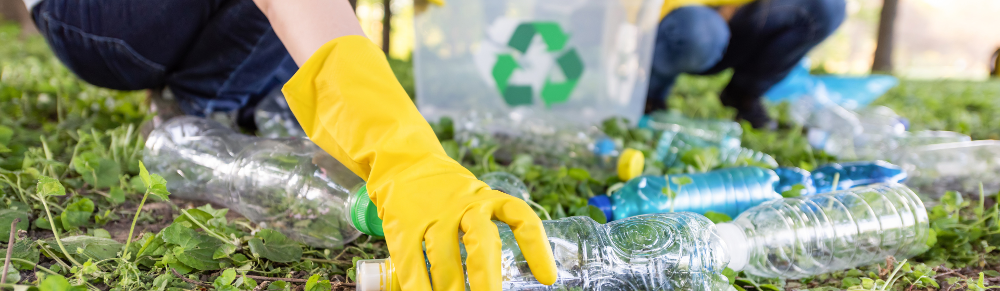
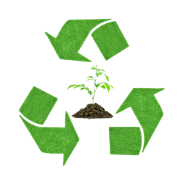

RECICLAGEM: ONDE VÃO OS RESÍDUOS?
A reciclagem encaminha os resíduos para indústrias que os transformam em novos produtos, contribuindo para a preservação ambiental.
A reciclagem é um processo fundamental para o manejo adequado dos resíduos sólidos e para a preservação do meio ambiente. Por meio dela, materiais que seriam descartados como lixo podem ser transformados em novos produtos, reduzindo a necessidade de extração de recursos naturais e minimizando a quantidade de resíduos destinados a aterros sanitários.
Mas, afinal, onde vão os resíduos após serem reciclados? Depois de coletados e separados corretamente, os materiais recicláveis são encaminhados para indústrias de reciclagem. Nesses locais, os resíduos passam por processos específicos de tratamento, como a separação, a limpeza, a trituração e a transformação em matéria-prima para a fabricação de novos produtos.
Os destinos finais dos materiais reciclados variam de acordo com o tipo de material e sua capacidade de ser reintegrado ao ciclo produtivo. Alguns exemplos de destinos comuns são:
Papel e papelão: Após o processo de reciclagem, esses materiais podem ser transformados em novas folhas de papel, caixas, embalagens, entre outros.
Plástico: O plástico reciclado pode ser utilizado para fabricar diversos produtos, como garrafas, tubos, sacolas, brinquedos, móveis e até mesmo roupas.
Vidro: Os recipientes de vidro podem ser derretidos e transformados em novos frascos, garrafas, copos e outros objetos de vidro.
Metal: O metal reciclado pode ser utilizado na fabricação de latas, peças automotivas, eletrodomésticos, entre outros produtos.
Resíduos orgânicos: Os resíduos orgânicos, como restos de comida e podas de jardim, podem ser compostados, gerando adubo para a agricultura e jardinagem.
É importante ressaltar que nem todos os materiais podem ser reciclados infinitamente, devido à perda de qualidade durante o processo. Além disso, existem materiais que demandam tecnologias mais avançadas para sua reciclagem, como os eletrônicos, as pilhas e as baterias.
Curiosidade: Você sabia que, além de contribuir para a preservação ambiental, a reciclagem também pode gerar empregos? A indústria da reciclagem é responsável por criar oportunidades de trabalho em diversas etapas do processo, desde a coleta até a transformação dos materiais. Além disso, a reciclagem promove o desenvolvimento de tecnologias e inovações, impulsionando setores econômicos relacionados à sustentabilidade e à economia circular.